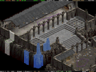
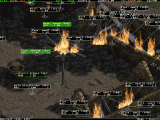
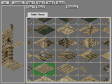
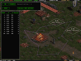
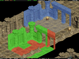
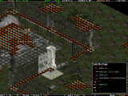
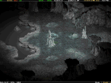
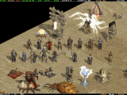
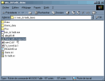
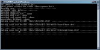

|

Overview : Layer
toggle, zoom, multi-selection

Objects editing

Tiles editing

Paths editing

Copy/paste Tiles
: useful real-time preview

View accurate
infos of Tiles

A toy : Night
preview

Objects are almost
like in the Game
|
|
Main
ZIPs
Compiled with
Microsoft Visual C++ 2010 and using the library
Allegro v 4.4.2.
win_ds1edit_20111030.zip (5.76 MB),
05 November 2011
Just in case, an older version :
compiled with Microsoft Visual C++ 7.0 and using the library
Allegro v 4.2.1.
win_ds1edit_20070423.zip (607 kB), 23
April 2007
Don't
forget to read the README.TXT that
tells how the editor works.
To see
a better documentation than the README.TXT,
check this documentation page as it contains screenshots
and small tutorials.
Stand-alone DEMO version
If you
don't have the game Diablo II, but still want to try the editor, then
you have to use this special package. It is composed of the regular
editor's files, an additional directory that contains a selection of
graphical files, and a modified ds1edit.ini.
- Get the
zip file : win_ds1edit_demo.zip
(4.83 MB), 23 April 2007
- Un-zip
it somewhere on your hard-disk (keep the directory structure when extracting
!)
- You should
obtain something like this :

(enlarge picture)
- Double-click
on the "Demo with 2 maps.bat" file, and the editor
is initialising :

(enlarge picture)
- When it
has finished you can fully edit Tristram
and the Cairn Stones maps :
Source Code
(Microsoft Visual C++ 2010, Allegro 4.4.2)
win_ds1edit_20111030_src.zip
(160 kB), 05 November 2011, 25326 lines of code
Links
Main
link, ds1edit (in the Phrozen Keep's Tools Forum)
Win32
version, win_ds1edit, console version, all Windows platform
If troubles,
try to check here
General
help
Contact
: siramy_paul@yahoo.com |